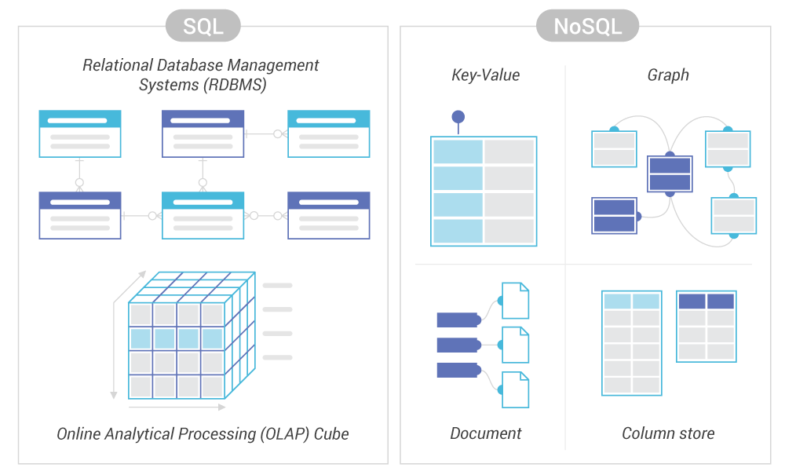

Introduction to Big Data and its Ecosystem
2026
Data evolution
1 ZB
1,000,000 PB
1,000,000,000,000 GB
1,000,000,000,000,000,000,000 B

Quizz
What is the estimated size of the global data sphere?
- Answer A: 175 Petabytes
- Answer B: 175 Exabytes
- Answer C: 175 Zetabytes

Quizz
Cite some V’s of Big Data (multiple choices):
- Answer A: Validation
- Answer B: Volume
- Answer C: Velocity
- Answer D: Voldemort
- Answer E: Variety

Hadoop & Map Reduce

NoSQL (Not only SQL)


Logs, ETL, Time series


Dataviz
BI (softwares)

Python (libraries)

Quizz
Which technology is (was?) the most representative of the Big Data world?
- Answer A: Spark
- Answer B: Elasticsearch
- Answer C: Hadoop
- Answer D: Tensorflow
- Answer E: MPI (Message Passing Interface)

Other main use cases
- Digital twins
- Predictive maintenance
- Smart City
- Real time processing

Quizz
What is the typical volumes of scientific Datasets (multiple choices)?
- Answer A: MBs
- Answer B: GBs
- Answer C: TBs
- Answer D: PBs
- Answer E: EBs

Distribute datasets and algorithms
- For preprocessing as seen above
- Means to load and learn on large volumes by distributing storage
- Distributed learning with data locality on big datasets
- Distributed hyper parameter search

Quizz
Are Big Data and Machine Learning the same?